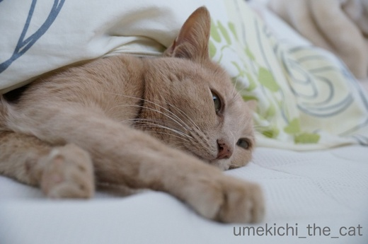
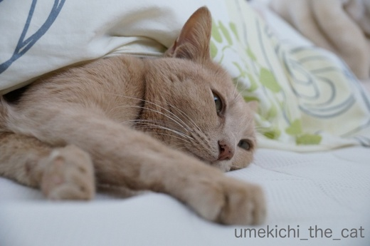

お布団から出るのがつらい朝 [梅吉]
･゜ﾟ･昨日nice！カウンターが「8888」に。踏んだのはpalpalさん！！おめでとー！！！･゜ﾟ･
梅吉からありがとうガブをー！
お休みの日、二度寝をするとなかなかリビングにやってこない梅吉さん。

様子を見に行くと・・・
おててが見えてますよーＯ(≧▽≦)Ｏ

ああ、顔を見なくてもダメになっているのが分かりますw

ちょっとー、起きないんですか？

実力行使。
抱きかかえようとするとシーツをぎゅーーーっと掴んで抵抗。
もちろん無駄な抵抗です。
暖かいリビングにのそのそ歩いて行ったなぁと思っていると

こんなことになっていました(^▽^;)
また寒さが戻ってきましたね。
梅吉じゃなくても朝布団から出るのに気合が入ります。
関東の降雪にはちょっとびっくり。思いっきり積もりましたねー！
しかも湿った重い雪。雪かきをする方はご苦労様です。
（この時期の北海道の雪は寒いのでめっちゃ軽い）
腕だけでやってはいけません。腰を入れてするんですよー＾＾
ただし度がすぎると腰を痛めるのでご注意をm(_ _)m
 ↑ガブッと一押し↑
↑ガブッと一押し↑
新酒が出来上がってあちこちから蔵開きのニュースが。
もちろん我が家も新酒を買いに出かけます。
出かけたのは
神戸市灘区。そう、灘の酒の蔵が集まるところです。

ここ浜福鶴のお酒が好きなのです。
有料試飲で
「空蔵 袋吊り熟成生原酒」「蔵出し生にごり」「空蔵 山田錦」「七ツ梅生酛純米」
をいただきました＾＾
買ってきたのは
「蔵開きの会限定 しぼりたて」・・・を三本ほど(〃▽〃)
今年はちょっと控えめなんですよw
ここのお酒は一口で言うと「フルーティな旨口」。
酒瓶の封を切るとなんとも言えない良い香りがふわ〜っと漂います。
ワイングラスで飲むと香りが広がってさらに美味なんですよー。
ワインにまったく引けを取りません。
メジャーなお酒で言うと新潟、菊水酒造の「ふなぐち 一番しぼり」の路線でしょうか・・・
黄色缶はコンビニやスーパーで扱っているところも多いので
ご存知の方も多いと思います。
「ふなぐち 一番しぼり」では緑缶の新酒
が大好きなんですが今年は逃しちゃったみたいです。
近所の酒屋さんで毎年入荷していたのに今年は見当たらず・・・残念！
来年はメーカーから取り寄せちゃおうかな。
梅吉からありがとうガブをー！
お休みの日、二度寝をするとなかなかリビングにやってこない梅吉さん。

様子を見に行くと・・・
おててが見えてますよーＯ(≧▽≦)Ｏ

ああ、顔を見なくてもダメになっているのが分かりますw

ちょっとー、起きないんですか？

実力行使。
抱きかかえようとするとシーツをぎゅーーーっと掴んで抵抗。
もちろん無駄な抵抗です。
暖かいリビングにのそのそ歩いて行ったなぁと思っていると

こんなことになっていました(^▽^;)
また寒さが戻ってきましたね。
梅吉じゃなくても朝布団から出るのに気合が入ります。
関東の降雪にはちょっとびっくり。思いっきり積もりましたねー！
しかも湿った重い雪。雪かきをする方はご苦労様です。
（この時期の北海道の雪は寒いのでめっちゃ軽い）
腕だけでやってはいけません。腰を入れてするんですよー＾＾
ただし度がすぎると腰を痛めるのでご注意をm(_ _)m
新酒が出来上がってあちこちから蔵開きのニュースが。
もちろん我が家も新酒を買いに出かけます。
出かけたのは
神戸市灘区。そう、灘の酒の蔵が集まるところです。

ここ浜福鶴のお酒が好きなのです。
有料試飲で
「空蔵 袋吊り熟成生原酒」「蔵出し生にごり」「空蔵 山田錦」「七ツ梅生酛純米」
をいただきました＾＾
買ってきたのは
「蔵開きの会限定 しぼりたて」・・・を三本ほど(〃▽〃)
今年はちょっと控えめなんですよw
ここのお酒は一口で言うと「フルーティな旨口」。
酒瓶の封を切るとなんとも言えない良い香りがふわ〜っと漂います。
ワイングラスで飲むと香りが広がってさらに美味なんですよー。
ワインにまったく引けを取りません。
メジャーなお酒で言うと新潟、菊水酒造の「ふなぐち 一番しぼり」の路線でしょうか・・・
黄色缶はコンビニやスーパーで扱っているところも多いので
ご存知の方も多いと思います。
「ふなぐち 一番しぼり」では緑缶の新酒
が大好きなんですが今年は逃しちゃったみたいです。
近所の酒屋さんで毎年入荷していたのに今年は見当たらず・・・残念！
来年はメーカーから取り寄せちゃおうかな。

カフェオレ色の梅吉

梅吉 2023年8月10日 永眠


梅吉と出会った譲渡会

犬猫の理由なき殺処分ゼロ
妄想広告
UMEKICHI 光

爆発的に早い！
時々攻撃的！
Thanks to Mr.Boss365
爆発的に早い！
時々攻撃的！
Thanks to Mr.Boss365

可愛いお手が見えていますね。
この寒さ、異常ですね。
梅吉さんでなくても身体が動きません。
日本酒が好きなのですね。
ビールもワインも好きですね。
お酒の楽しみ方があって羨ましいです。
一口と言わず、三口くらいなら、なんでもいけます（笑）
by kiki (2018-01-23 14:48)
思いっきり積もりました(;^_^A
そして朝から雪かきして
腕の震えが止まりません（笑
こう寒いと梅吉さんも布団で
ヌクヌクしたいですよね(#^.^#)
by きぃ (2018-01-23 16:40)
梅吉君の、お布団からのぞいたおててがたまらないですね。
梅吉君はお布団に潜っても平気派なんですね。
うちのガーネットはお布団に入ってきてもすぐ出て行ってしまいます。暑いらしい。
by BillK-ko (2018-01-23 19:43)
ふなくち、昔はよく飲んでいましたが、最近は芋焼酎に変えたのでご無沙汰です！
美味しいですよね(^^)
by ma2ma2 (2018-01-23 20:55)
あ～蔵出し生にごりの美味しそうなことったら♪
この時期しか味わえない楽しみですね(*^▽^*)
飲みすぎると最近はスグ寝てしまってこてつに怒られるので、ものすごくものすご～く酒量が減りました^^；
梅吉さんは潜って寝る派なんですね！
とっても気持ちよさそう。
by ゆきち (2018-01-23 21:16)
梅吉さん、気持ちよさそうで癒されますね。^^)
日本酒、この時期美味しいけれど、酒に弱くなって
あまり飲まなくなってしまいましたが、
ちょっとだけなら飲んでみたいですー。^^;
by yes_hama (2018-01-23 21:38)
梅吉さん、普段の自分を見ているようです(^^;
低血圧なんです。朝にめっぽう弱い。
梅吉さんに親近感が増しました(^^)
by riverwalk (2018-01-23 23:45)
春眠暁を・・・あれ、あれれ。
暖かいところでごろごろしたいですよねぇ。
昨日は大パニックの手前でしたがすでに殺人電車でした・・・(｡-_-｡)
でででっ！
なんと楽しそうなイベントが（*´∀｀*）
by Ja-Kou66 (2018-01-24 00:28)
梅吉さんのお布団好きは、ちぃさんがいつも寝ている梅吉さんにお布団かけてあげてたからでは?
by zombiekong (2018-01-24 00:49)
8888nice！おめでとうございます♪
でも、ガブ～は遠慮したいです＾＾；
うちの子達は私が布団から出たら一緒に出ますよ。
布団の中より膝の上の方が好きみたいです＾＾
by ぽちの輔 (2018-01-24 07:41)
8888nice!おめでとうございます！
いいなー、日本酒。
銘柄とかあんまり知らないけど
浦霞と八海山が好きです(≧∀≦)
by よーちゃん (2018-01-24 08:10)
梅吉君、なんて幸せそうなの！
ぬくぬくしてるのが良く分かりますｗｗ
そのベッド気持ちよさそうだものー。
わたしもぬくぬくしたいｗｗ
あー、新酒の季節になりましたね～
浜福鶴は知らないお酒だわ。どこかで見かけたら飲んでみる！
by リュカ (2018-01-24 10:14)
お布団の中でダメになってる梅吉くん可愛い～(≧▽≦)
仕方ないか～って歩いて行ったリビングでもこのありさまｗ
写真見ているだけで癒されます。
by emi (2018-01-24 13:26)
8888niceおめでとうございます！押したのが私だったとは( ﾟДﾟ)喜んでガブ～お受けしますっ!!
梅吉くん、まるで人のように寝ていますね。ああ、気持ちよさそうだこと(*^^*)
by palpal (2018-01-24 15:13)
梅吉さんの可愛いおててがたまりません＾＾
ぬくぬく、すっぽり、出たくないよね～＾＾
関東の雪も今回はなかなか手強いです。
寝顔に癒やされます～＾＾
by sana (2018-01-24 19:37)
お布団から、頭とお手々が出てる( ´∀｀ )
こんな可愛い寝姿を見たいのに、
うちのあかりは潜って寝る派なんです＾＾；
それに、この寒いのに私より早起きで
毎朝、ご親切に私を起こしてくれるので、
二度寝もできません…やれやれです(￣▽￣)
by マーヤ (2018-01-24 21:14)
梅吉さんの気持ちがとてもよくわかります＾＾
暖かい布団でぬくぬく♪してると、本当に離れたくなくて
毎朝自分と戦ってます(⌒-⌒; )
布団に入って気持ちよさそうな梅吉さんの顔を見ると
このままそっとしておこうって思っちゃいますね( ^ω^ )
by ニッキー (2018-01-24 21:29)
二度寝三度寝…（≧∇≦）
実力行使も意味なしで、梅吉クンの勝ち〜！
今朝もまだ所々に雪…というか凍った感じの雪が。スコップで叩いて割って日向に持って行って溶かす作業があちこちで見られます〜
by も〜 (2018-01-25 09:15)
二度寝満喫、幸せなひと時ね！(〃ω〃) ｷｬｧ♪
by Ginger (2018-01-25 15:01)
かわいい！かわいすぎる！
by ふにゃいの (2018-01-25 23:45)
なんか^^福が舞い込んできそう。かわいいですね^^
by ニコニコファイト (2018-01-26 07:18)
kikiさん＞
本当に寒いですねー。
寒いだけなら良いのですが風が強いので
外に出るのがためらわれちゃいます (⌒_⌒;
恥ずかしながらアルコールの入った飲み物
飲めないものはありません(〃▽〃)
でも、お酒は楽しく飲んでそのうち寝落ちしちゃいますw
人様にご迷惑をかけることはないのでご安心くださいませーm(_ _)m
きぃさん＞
腕の震えは止まった頃でしょうか＾＾
これ以上降ったらきぃさんの腕も腰も
悲鳴をあげちゃうから
さらなる雪かきがないように祈ってます！
BillK-koさん＞
お布団に覆われちゃうのが嫌な子もいるんですよね。
ガーさんもそうなのかな＾＾
梅吉は寝入り端は顔だけ布団の外に出したいようです。
で、途中から顔もお布団に埋もれたい・・・
一連のお布団の動きは下僕が行います。
めんどくさいやっちゃー！
ma2ma2さん＞
芋焼酎、ma2ma2さんは森伊蔵！のイメージなのですが・・・
私も好きですがそんな高級品ではなく日南の「飫肥杉」が好きです＾＾
ゆきちさん＞
買ってきたお酒のアテは何にしようか思案中ですよー＾＾
この時期しか楽しめない新酒、堪能しようと思っています。
梅吉は寝入り端はお布団から顔を出したい、
途中からはお布団に潜り込みたいとお好みがうるさいのです(-_-メ)
なので下僕はちゃんとお顔が出るように
夜中に「おふとんにもぐるー！」と言われたら
梅吉スペースを空ける、とゆっくり寝ていられません・・・涙
yes_hamaさん＞
にゃんこの寝姿は本当に幸せそうですよねー＾＾
といってもいつまでもお布団が片付かないので
強制撤去しましたよ(^▽^;)
日本酒は飲むと強烈に眠くなるので
最近はお家限定にしています＾＾
by ちぃ (2018-01-26 16:11)
riverwalkさん＞
釣りをする方はめっぽう朝に強いんだと思っていました。
釣りに行く時だけはパチッと眼が覚めるのかな・・・(^_－)☆
Ja-Kou66さん＞
一年中暁を覚えない梅吉ですw
早朝に人を起こしてご飯を要求して
二度寝する喜び・・・私も味わってみたいかもー！
浜福鶴、イベントも良いのですが通常営業の日もグッドなんです。
杜氏の方が試飲コーナーに立っていることがあるのですが
じゃんじゃん試飲させてくれますよー＾＾
zombiekongさん＞
そうか！私が甘やかした結果・・・
でもそうして良かったー！一緒にお布団で寝られるもの＾＾
ぽちの輔さん＞
あら、じゃあぽちの輔さんの時は
足タックルにしておきますね＾＾
ぽちの輔さんちのみなニャンはお布団より飼い主なのですねー！
うちはお布団に軍配があがりました・・・( ；∀；)
by ちぃ (2018-01-27 08:55)
よーちゃん＞
日本酒はほんっとうに蔵元も銘柄もたくさんあって・・・
私も自分の飲んだ一握りのものしか知らないですー。
八海山、有名どころ！そして高級品！！
浦霞はふるさと納税の返礼品になっていたので
（東北大震災からの復興も願って）
地域に寄付をしました。
もちろん美味しいお酒でしたよ＾＾
リュカさん＞
（甘えて）アゴにガブされますがそれでもよろしければ
梅吉と一緒にどうぞー＾＾
腕枕も必須だから寝返り打てない腕痺れるの
修行のような睡眠を体験できます！ぜひ！！
浜福鶴、（通常時は）無料試飲コーナーが充実していて
どんどん飲ませてくれます＾＾
太っ腹なのー。
今度関西にいらしたらご案内しますよー！
emiさん＞
高脂血症だし（関係ないけど）やんちゃ坊主だし
寒さなんてへっちゃらなんじゃない？って感じの梅吉ですが
やっぱり寒がり！普通の猫なのねーっ＾＾
我が家はお日様の当たる時間が短いので
陽だまりの中で三度寝を楽しむ梅吉でした♪
palpalさん＞
ガブ、受けていただけますかー！＾＾
梅吉は生意気に枕も一緒に使おうとするんですよ。
しかも中央を！！
sanaさん＞
このかわいいおててを冷たい私の手で触ると・・・
見事に振り払われます(^▽^;)
今年の日本列島は冷凍庫の中って感じですね。
昨日大阪は少しの間ですが吹雪きました！
マーヤさん＞
あかりちゃん、二度寝をしないなんて
なんて勤勉で規律正しい生活なのかしらー！
お布団に潜られちゃったら確かに寝姿は拝めませんねぇ。
私も可愛い寝顔を見ちゃいましょう♪と
腕枕で寝る梅吉に暗がりで顔を寄せると・・・
もれなく（甘えて）アゴをガブされます。
その内お布団に潜っちゃうので寝顔＆寝姿を楽しめるのは
夜が明けるまで寝ていられる週末のみになってます( ；∀；)
ニッキーさん＞
私もお布団でぬくぬくしたいのですが
梅吉が「おきるにゃー！！」と頭をていていしたり
アゴをガブしてくるのでとても寝ていられません(꒦ິ⌑꒦ີ)
勝てる気もしないし・・・・
くやしいので二度寝を貪る梅吉には結構手荒く
布団を引き剥がしてやりますよ！
も〜さん＞
はい・・・完敗でしたよー。
梅吉には勝利を讃える鼻チューをお送りしました＾＾
昨日は大阪も一瞬視界が利かなくなるくらいの吹雪でした。
「積もるかも♪」と期待しましたが
降ったそばからとけちゃいました・・・残念！
Ginerさん＞
梅吉が幸せを満喫してくれればいい・・・
と休日にも関わらず5時に起こされた下僕は思いました(꒦ິ⌑꒦ີ)
ふにゃいのさん＞
猫の寝姿＆寝顔にかなうものなし！ですよねー＾＾
ニコニコファイトさん＞
猫福を呼びますよー！
猫獅子舞も得意です！！ガブっとするのでお覚悟を＾＾
by ちぃ (2018-01-27 15:38)